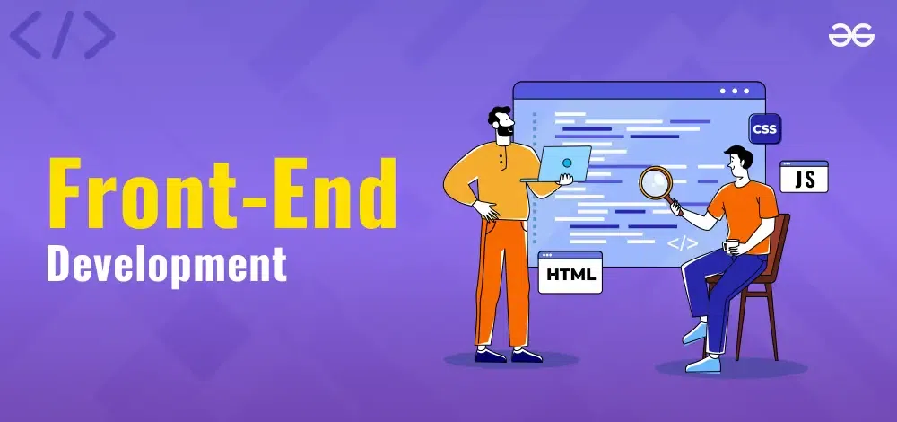

<!-- შექმენით გვერდი -->

<h1>My  Hobby</h1>
<p>I always dreamed of becoming web developer</p>     

<br>
<button>Become a developer</button>
<!-- This page uses 4 different elements and locally saved img -->
<!-- კომენტარი დაიგნორებული იქნება პროგრამის გამშვების მიერ, იქნება python-ის ინტერპტეტატორი თუ ბრაუზერი რომელიც არენდერებს HTML-ის კოდს -->


<!--
HTML-ის თვისებები

HTML არის case insenstive ესეიგი ყურადღებას არ აქცევს სიმბოლების case
შესაძლებელია ორივეს გამოყენება

HTML აიგნორებს whitespaces, whitespace არის 1-ზე მეტი დაწერილი გამოტოვება ნებისმიერ ადიგლას HTML-ის კოდში
ასევე აიგნორეს break lines ხაზის ჩატხევებს და თუ ვეცდებით ხლეოვნურად გადავიტანოთ რაიმე ტექსტი ან თეგი შემდეგ ხაზზე ამას ბრაუზეი არ წაიკითხავს, ამისთვის ჩვენ გვაქვს <br> empty თეგი


ჩვენ მიერ ნასწავლი თეგები:
Container: <h1-h6>, <p>, <button>
Empty: , <br>

HTML ელემენტები შეიძლება დავახასიათოთ თეგების მიხედვით 2 კატეროგირად: container და empty
container ელემენტებს სჭირდებათ როგორც გამხსნელი თეგი ისე დამხურავი, ხოლო empty თეგებისთვის საკმარისა გამხსნელი თეგი და არაა საჭირო დამხურავი

ელემენტები ვებგვერზე თავისი თვისებიდან გამომდინარე ახალ ხაზე შეიქმენბიან თუ შეძლებ სხვა ელემენტის გვერდით გაჩერებას იყოფიან კიდევ 2 კატეოგირად: block level (ისეთი ელემენტები რომელბიც ყოველთვის ახალ ხაზზე იწყებიდან და ზომის მიუხედავად იყენებენ მათთვის ხელმისაწვდომ მთლიან სივრცეს) და inline ელემენტები რომლებიც იკავებენ გამოყოფილი სივრიციან მხოლოდ იმ სირვცეს რაც ესაჭიროებათ

-->

<p>Welcome!
Enter your name</p>
<p>Hello!<br>Enter your name</p>


